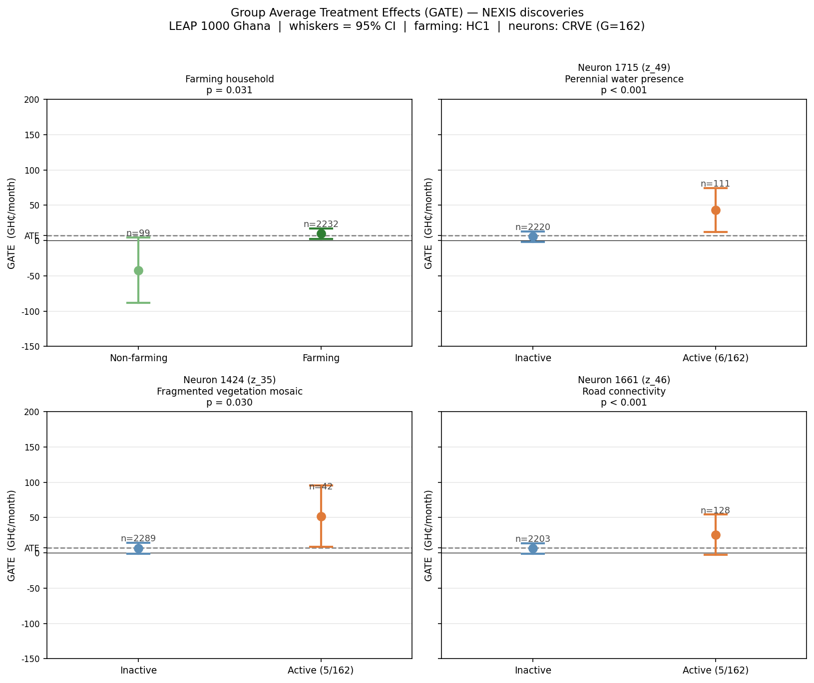
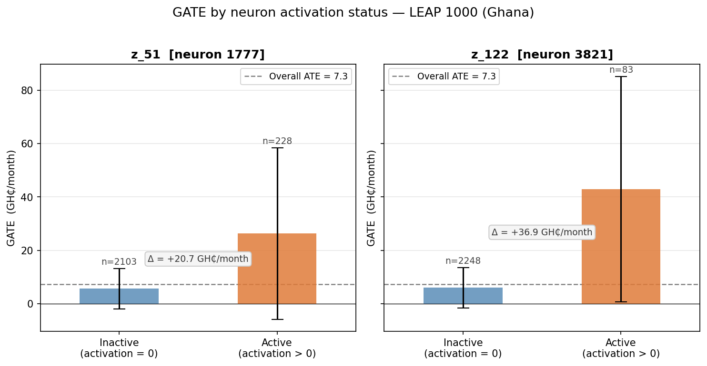

Preprint · 2025
Heterogeneous Treatment Effect (HTE) identification is crucial to explain the impact of an intervention and optimize our policies accordingly. Existing approaches trade expressivity for interpretability, but as long as some active heterogeneity drivers are unmeasured, both ends of this spectrum allow for spurious HTE characterization with no causal reading.
We focus on controlled experiments and argue that the oracle causal characterization via the direct effect modifiers is now within reach, thanks to (i) more extensive pre-treatment measurements, e.g., multi-modal, and (ii) representation learning pipelines to scale their analyses. We re-frame HTE identification as a Markov-blanket discovery problem on a sufficient and aligned pre-treatment representation, and introduce Neural EXposure Interaction Search (NEXIS), an iterative procedure with provable and empirically validated consistent selection.
We deploy NEXIS on two anti-poverty programs in Africa, augmenting each with satellite imagery capturing previously unmeasured environmental effect modifiers, leading to novel interpretable and prescriptive guidelines to optimize the programs' next iterations.
Existing HTE methods either model effect heterogeneity flexibly but without interpretability, or identify interpretable subgroups over curated structured covariates without guaranteeing causal separation of treatment interactions from spurious correlates. NEXIS bridges this gap: it is the first algorithm to identify a causal and human-interpretable HTE characterization from complex, unstructured observations.

Causal model and effect modification taxonomy. Shaded nodes are observed; white nodes are latent. Wdir are the direct effect modifiers (treatment interactors); NEXIS identifies their principal proxies within the learned dictionary Z = ψ(X).
We construct a semi-synthetic RCT benchmark on CelebA with |S*| = 2 known direct modifiers (wearing a hat, wearing eyeglasses); pre-treatment information is face images only. A trained SAE (m = 13,824 codes) on SigLIP representations provides the candidate dictionary.
As sample size n or effect magnitude η grow, marginal screening accumulates non-direct modifiers (precision collapse), faithfully tracking the much larger set M* ≈ [m] of all entangled effect modifiers rather than the two true interactors. NEXIS robustly recovers S* monotonically with power.

Precision and Recall of S* recovery as effect magnitude η increases. Marginal screening diverges; NEXIS converges.

Precision and Recall of S* recovery as sample size n increases. Larger n makes precision collapse worse for marginal screening; NEXIS is unaffected.

Ablation study: varying NEXIS components under increasing effect magnitude.

Ablation study: varying NEXIS components under increasing sample size.
YOP awarded cash grants to self-organised youth groups across 439 groups in 331 communities in post-conflict Northern Uganda, randomized to measure impact on productive economic capacity. We extend the original trial by pairing it with Landsat-7 multispectral satellite imagery (2005–2007 composite, pre-program), embedded via the Prithvi-EO geospatial foundation model, and summarised with a learned SAE dictionary. NEXIS then selects from the pooled candidate set of landscape atoms, spectral indices, and demographic covariates.

Satellite-derived direct modifiers of skilled employment. Each row: Uganda community map (modifier activation) + top/bottom Landsat tiles.

Satellite-derived direct modifiers of business asset accumulation. High NDVI (vegetation greenness) amplifies impact; structured agriculture dampens it.
Skilled employment — unified by outside-option logic: Karamojong speakers (marginalized pastoralists) observe a significantly higher impact; Teso and Acholi communities, already affording productive pathways, exhibit dampened effects. Perennial river presence and vegetation spatial heterogeneity dampen impact by enabling subsistence fishing or bush/crop alternatives.
Business assets — high-NDVI (green, productive) regions show amplified program impact; structured agricultural landscape dampens returns, consistent with crowding-out by incumbent commercial-scale agriculture.

Trial sites by district.

Linguistic-group heterogeneity in skilled employment.
LEAP 1000 provided quarterly cash transfers to extremely poor households with newborns across 2,331 households in 162 communities in Northern and Upper East Ghana, evaluated via a two-wave cluster-randomized trial. We extend the analysis with Landsat-8 imagery (2015), embedded via Prithvi-EO and pooled with 24 survey covariates and spectral indices. NEXIS then selects from this enriched candidate pool.

Left: Satellite-derived direct modifiers retained by NEXIS on LEAP 1000, with VLM interpretations from top/bottom activating tiles. Right: Temporal evolution for waterway-active communities (2015→2017), showing cropland extension — supporting the complementarity hypothesis.
The interpretation is complementarity-based: water-adjacent smallholders can direct transfers into irrigation-season agriculture, while forest-edge households can layer cash onto existing non-timber livelihood strategies unavailable elsewhere. Cropland expansion and denser riparian vegetation from 2015 to 2017 (satellite VLM tracking) further support the waterway hypothesis.

Marginal screening vs. NEXIS: NEXIS selects the minimal causal set; marginal screening accumulates dozens of correlated proxies.

Group Average Treatment Effects for discovered modifiers.

GATE estimates stratified by SAE atom activations for the two retained direct modifiers.
@article{cadei2025nexis,
title = {From Tokens to Policy: Causal and Interpretable
Heterogeneous Treatment Effects Identification},
author = {Cadei, Riccardo and Otchere, Frank and Tirivayi, Nyasha and
Tagliaferro, Gustavo Angeles and Bargagli-Stoffi, Falco J.
and Locatello, Francesco},
year = {2025},
note = {Preprint}
}